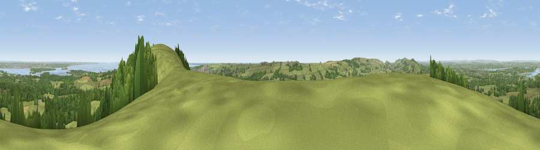

Viewpoint near Harman's Cross
#1892 in England · top 13% of its area beats it · near Harman's CrossWhere it is
The exact computed spot (SY 98700 81825). Click the marker for map links.
The view, rendered

A 360° render of this exact spot computed from the terrain model, tree cover and land cover — summer colours, afternoon light, calibrated against photographs of famous viewpoints. Real trees, hedges and buildings will differ in detail.
The panorama
Grey silhouette: terrain skyline in each direction (720 bearings, Earth curvature and refraction included). Dashed green: skyline with trees (+15 m) and buildings (+8 m) as obstacles. Blue strip: how far the ground is visible on each bearing.
Where the view opens
Wedge length = distance to the farthest visible ground on that bearing (vegetation-aware). Rings at 10, 25 and 50 km.
What fills the view
58% grassland · 30% woodland · 6% water · 3% cropland · 2% built-up · 1% wetland
Angular shares of the visible panorama (visual magnitude), not map area. Landscape diversity 0.47 (0–1 Shannon).
Key numbers
More beautiful places nearby
The staircase of upgrades: each row has a higher view potential than everything closer. Driving times are estimates from straight-line distance, calibrated against real road routing — check an actual route before setting out.
| Place | Direction | Drive | Score |
|---|---|---|---|
| Viewpoint near Harman's Cross | ESE · 1 km | ~2 min | 80.8 |
| Nine Barrow Down | ESE · 2 km | ~6 min | 81.1 |
| Viewpoint near Harman's Cross | ESE · 3 km | ~6 min | 84.1 |
| Viewpoint near Worth Matravers | SW · 6 km | ~12 min | 86.0 |
| Viewpoint near Kimmeridge | SW · 6 km | ~13 min | 87.5 |
| Viewpoint near Abbotsbury | W · 43 km | ~63 min | 89.0 |
| Viewpoint near West Bexington | W · 44 km | ~64 min | 89.5 |
| The Knoll | W · 45 km | ~66 min | 91.0 |
50.63612, -2.01974 · source: screening · position refined by local search. Computed location — check access rights before visiting.